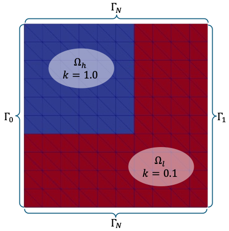
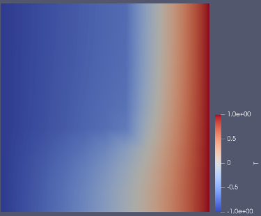
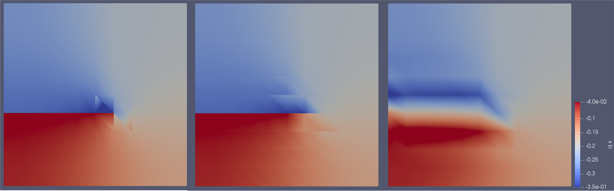

L2Projection for fluxes
As a prototype problem, we consider simplified version of the heat equation tutorial with out any heat source. Our problem can be stated as
\[\begin{align*} \mathrm{div}(\boldsymbol{q}) &= 0\quad \text{in } \Omega \\ \boldsymbol{q}\cdot\boldsymbol{n} &= 0 \quad \text{on } \Gamma_N \\ T &= -1 \quad \text{on } \Gamma_0\\ T &= 1 \quad \text{on } \Gamma_1 \end{align*}\]
where $\boldsymbol{q} = -k(\boldsymbol{x}) \nabla T$ is the heat flux that we will visualize. The heat conductivity,
\[k(\boldsymbol{x}) = \left\lbrace \begin{matrix} 1.0, \boldsymbol{x}\in\Omega_h \\ 0.1, \boldsymbol{x}\in\Omega_l \end{matrix}\right.\]
We create the described geometry and grid using the following code,
using Ferrite
RefShape = RefQuadrilateral
grid = generate_grid(Quadrilateral, 1 .* (10, 10))
addcellset!(grid, "low_k", x -> x[2] < -1.0e-3 || x[1] > 1.0e-3)Grid{2, Quadrilateral, Float64} with 100 Quadrilateral cells and 121 nodes
Figure 1: Mesh and domains for prototype problem
Next, we solve the described FE problem, following the heat equation tutorial, with the extra complication of a varying heat conductivity and non-homogeneous Dirichlet boundary conditions,
ipu = Lagrange{RefShape, 2}()
dh = close!(add!(DofHandler(grid), :T, ipu))
qr = QuadratureRule{RefShape}(2)
cv = CellValues(qr, ipu, Lagrange{RefShape, 1}())
function solve_fe(dh, cv, low_k_set)
K = allocate_matrix(dh)
f = zeros(ndofs(dh))
Ke = zeros(getnbasefunctions(cv), getnbasefunctions(cv))
assembler = start_assemble(K)
for cell in CellIterator(dh)
reinit!(cv, cell)
fill!(Ke, 0)
k = cellid(cell) in low_k_set ? 0.1 : 1.0
for q_point in 1:getnquadpoints(cv)
dΩ = getdetJdV(cv, q_point)
for i in 1:getnbasefunctions(cv)
∇Ni = shape_gradient(cv, q_point, i)
for j in 1:getnbasefunctions(cv)
∇Nj = shape_gradient(cv, q_point, j)
Ke[i, j] += k * (∇Ni ⋅ ∇Nj) * dΩ
end
end
end
assemble!(assembler, celldofs(cell), Ke)
end
ch = ConstraintHandler(dh)
add!(ch, Dirichlet(:T, getfacetset(dh.grid, "left"), Returns(-1.0)))
add!(ch, Dirichlet(:T, getfacetset(dh.grid, "right"), Returns(+1.0)))
close!(ch)
apply!(K, f, ch)
return K \ f
end
a = solve_fe(dh, cv, getcellset(grid, "low_k"));This gives the continuous temperature field,

Figure 2: Continuous temperature solution
Even though the temperature is continuous, the flux, $\boldsymbol{q}$, becomes discontinuous due to the jump of heat conductivity between $\Omega_h$ and $\Omega_l$. It will therefore not be correct to project he heat flux onto a continuous field. On the other hand, the conservation law requires that the divergence of the heat flux doesn't go to infinity. This translates to a heat flux that is continuous in the normal direction. Ferrite can describe so-called $H(\mathrm{div})$ function spaces, and here we will use RaviartThomas interpolations to do so.
Specifically, the difference between projecting onto DiscontinuousLagrange ($L^2$), Lagrange ($H^1$) and RaviartThomas $H(\mathrm{div})$ interpolations will be demonstrated.
To project the fluxes, we first calculate the fluxes in the quadrature points,
function calculate_qp_flux(cv, a, cell, low_k_set)
k = cellid(cell) in low_k_set ? 0.1 : 1.0
reinit!(cv, cell)
ae = a[celldofs(cell)]
return [-k * function_gradient(cv, q_point, ae) for q_point in 1:getnquadpoints(cv)]
end
qp_data = [calculate_qp_flux(cv, a, cell, getcellset(grid, "low_k")) for cell in CellIterator(dh)];Next, we project the solution and export it for interpolation. Note that 2nd order RaviartThomas has 8 base functions per triangle cell compared to 6 for vectorized linear DiscontinuousLagrange and Lagrange.
function project_and_export(name, dofhandler, sol, grid, qr_rhs, ip, type, data)
proj = L2Projector{type}(grid)
add!(proj, 1:getncells(grid), ip; qr_rhs)
close!(proj)
return VTKGridFile(name, dofhandler; write_discontinuous = true) do vtk
write_solution(vtk, dofhandler, sol)
Ferrite.write_cellset(vtk, grid, "low_k")
write_projection(vtk, proj, project(proj, data), "q")
end
end
project_and_export("proj_L2", dh, a, grid, qr, DiscontinuousLagrange{RefShape, 1}(), :scalar, qp_data)
project_and_export("proj_H1", dh, a, grid, qr, Lagrange{RefShape, 1}(), :scalar, qp_data)
project_and_export("proj_Hdiv", dh, a, grid, qr, RaviartThomas{RefShape, 1}(), :tensor, qp_data)VTKGridFile for the closed file "proj_Hdiv.vtu". Figure 3: $q_1$ flux projected onto different function spaces, with increasing continuity requirements from left to right, $L_2$, $H(\mathrm{div})$, and $H^1$.
From these results, we observe that both the discontinuous interpolations, DiscontinuousLagrange and RaviartThomas, correctly gives a sharp jump in the flux from the bottom to the top side. When forcing the discontinuous solution onto a continuous field for the Lagrange interpolation, we get some non-physical artifacts. Comparing the discontinuous interpolations, we note that neither gives a perfectly continuous flux within each domain. $H(\mathrm{div})$ interpolations only guarantee continuous normal fluxes across element boundaries, so this is expected on the slanted element edges. Finally, we note that there is less sharp non-physical jumps for the $H(\mathrm{div})$ projection compared to the $L_2$ projection in the x-direction.
This page was generated using Literate.jl.